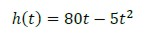
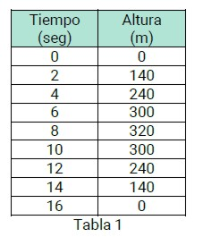
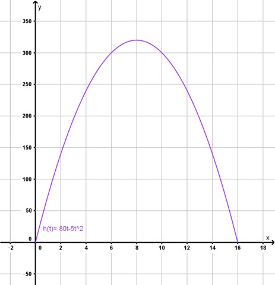
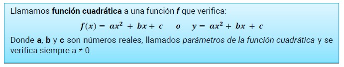
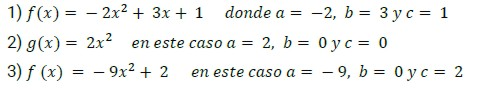

Función Cuadrática
Desde un barco que se halla en situación de emergencia se efectúa un disparo, en forma vertical, con una pistola de señales.
El destello podrá verse desde la base naval más cercana únicamente mientras se encuentre a una altura no menor de 195 m sobre el nivel del mar.
Los técnicos que integran la tripulación estiman que, de acuerdo con las características de las pistolas de señales y con las condiciones en que se dispara, la altura del destello estará dada por la siguiente fórmula:

En esta fórmula, h es la altura sobre el nivel del mar, en metros, cuando hayan transcurrido t segundos desde el momento del disparo.
Los técnicos han realizado una simulación y han obtenido el gráfico que aparece abajo y una tabla donde están expresadas las principales relaciones entre tiempo y altura:
|  |
 |
De acuerdo con tales datos:
-
¿Llegará a verse el destello desde la base naval?
-
¿Cuánto tiempo tarda la señal para alcanzar el punto más alto? ¿Cuánto tarda para caer al suelo?
-
¿Durante qué período de tiempo el destello se puede ver desde la base naval?
-
¿En qué momento cae al suelo?
-
¿En qué momento alcanza, el destello, los 275 m, los 320 m y los 340 m?
La fórmula con la cual modelizamos este problema recibe el nombre de función cuadrática.

La gráfica que representa a este tipo de funciones se denomina parábola.
Son ejemplos de funciones cuadráticas las siguientes expresiones:

Obra publicada con Licencia Creative Commons Reconocimiento Compartir igual 4.0